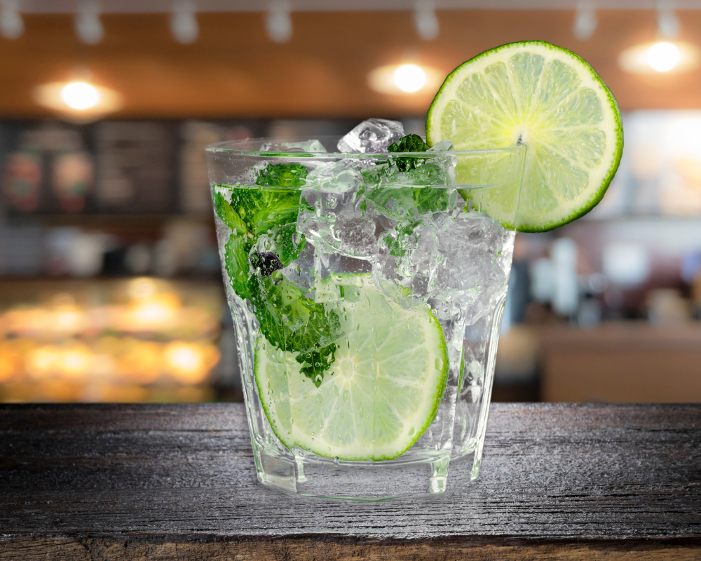

Writer's Cocktail
This is my favorite easy cocktail for when I'm in the mood for a good writing sprint. In the famous quote erraneously attributed to Hemingway: "Write drunk, edit sober."
Prep Time: 5 minutes
Yeild: 1 large cocktail
Ingredients
- 1 shot Luminar Mezcal Joven Tequila
- 1 shot El Padrino Extra Anejo Tequila
- Lime juice
- 1 can of flavored sparkling water
Directions
- Mix together all ingredients.
- Pour over ice.
- Enjoy!
Notes:
- It's not necessary to use these exact tequila brands. Use any you prefer. For best results, try to find one tequila with a mezcal flavor profile, or a smoky after taste, and one slightly sweeter tequila.
- Any flavor of sparkling water works since their flavors are so mild. I like floral or citrus flavors such as hibiscus or orange. A vanilla or berry flavor works too!
Home